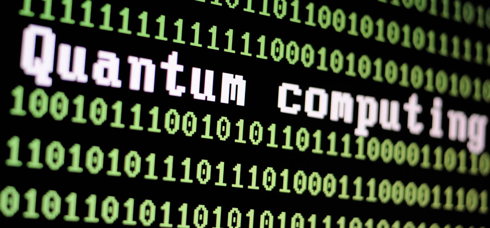
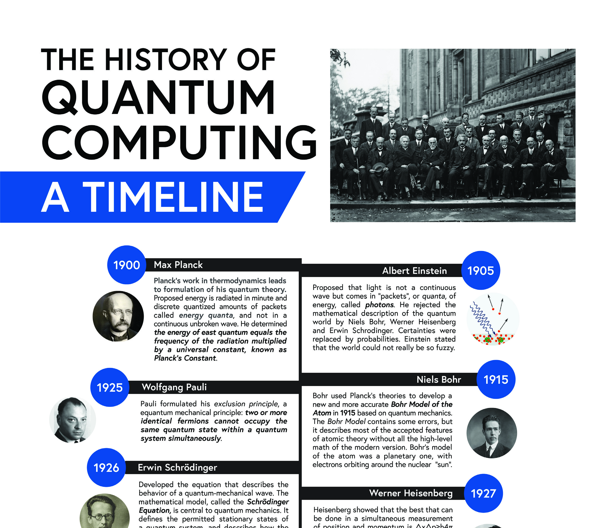
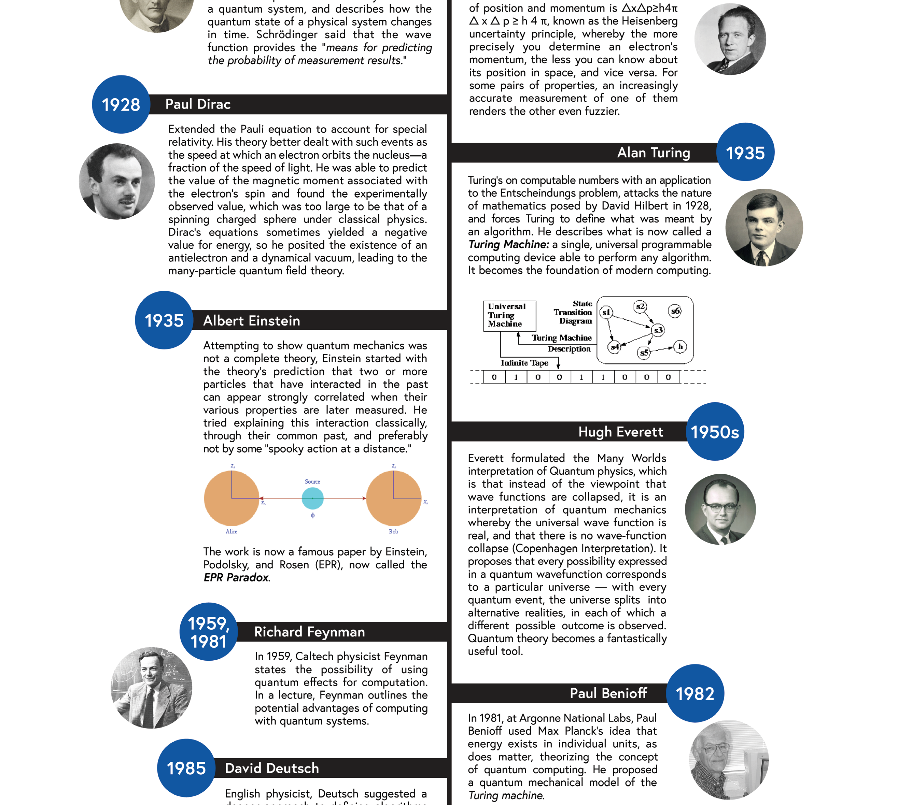
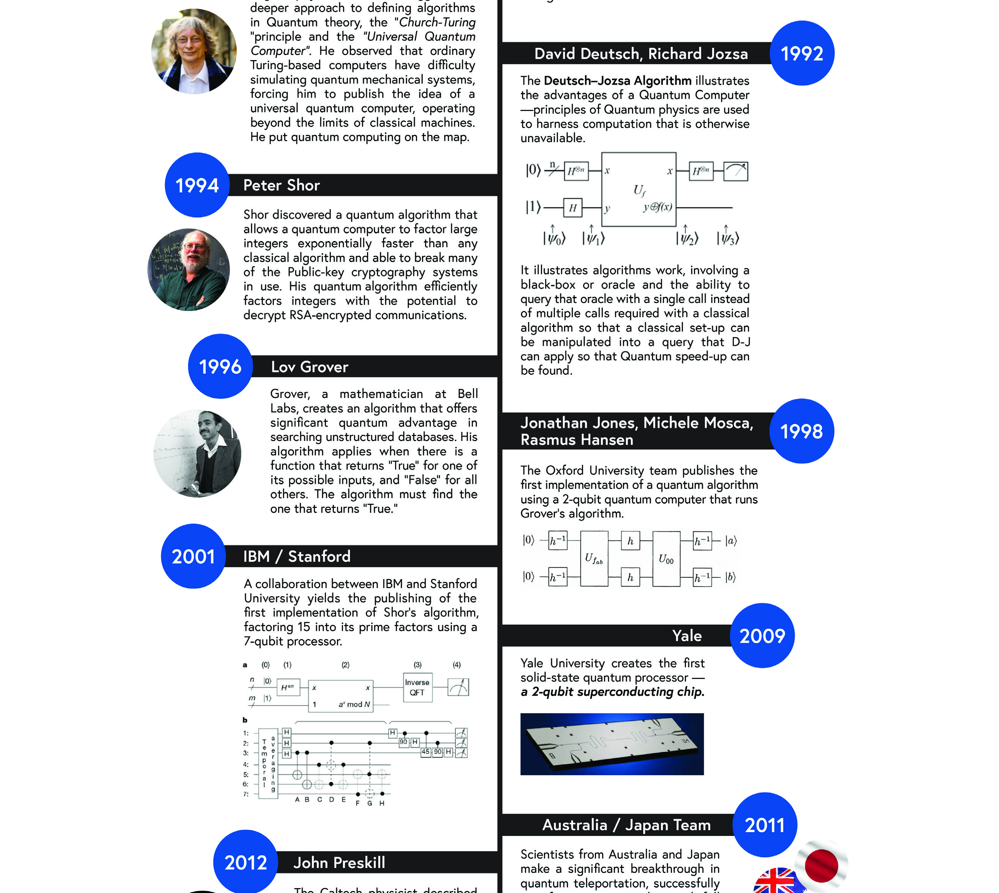
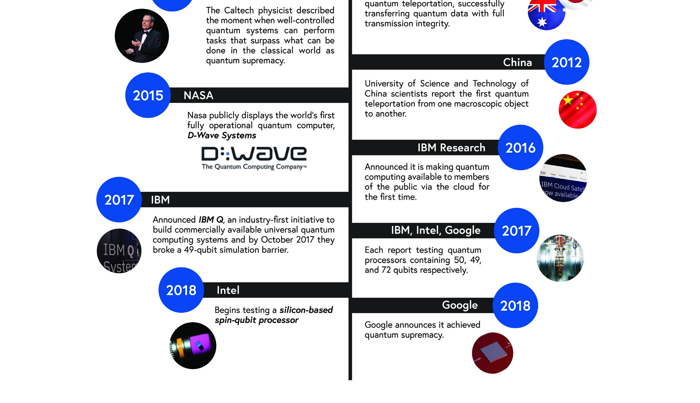
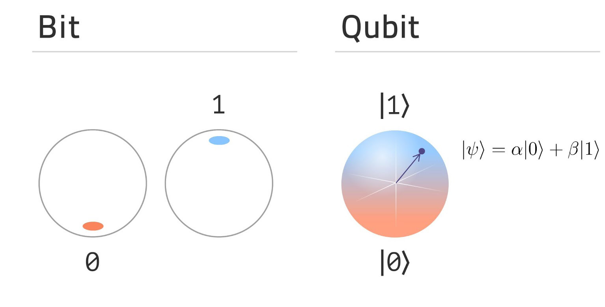
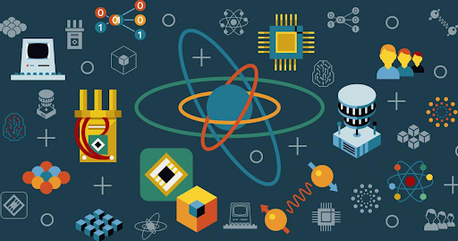

This course gives you the basics, even if all you know about quantum technology today is the riddle of a cat that can be alive and dead at the same time. Quantum computing is a genuinely difficult subject. It defies the intuition built up over a lifetime of living in a world ruled by classical physics. Even here, where we introduce the core ideas and deliberately avoid a deep dive into the mathematics, some of the strangeness is unavoidable. That is the nature of the field.
The goal is a 50,000-foot view: where quantum computing came from, what it is and what it is not, who the major players are, how you can get hands-on with it, and what the next decade may hold. You will see how a quantum computer works, and how it works differently from a traditional computer built on bits. You will get a taste of the quantum mechanics underneath, and you will learn why the constant management of errors is the single overriding factor in almost every approach to building these machines. All that is asked is that you stay open to what you read. Quantum computing is not built on the intuitive.

When John Levy, co-founder of the digital quantum computing company SeeQC, was asked which basic questions the industry had been trying to answer, he listed them without hesitation [1]:
The encouraging news is that the first questions now have answers. Yes, you can build a quantum computer, using approaches such as superconducting circuits, trapped ions, photonics, and several more. Yes, it can run an algorithm, and the development of algorithms across many applications is ongoing. The harder questions, about practical value and provable advantage, draw more nuanced answers depending on who you ask. What is no longer in doubt is that quantum computation is real. It can perform certain tasks that are extraordinarily difficult for a classical machine, even if some would argue those tasks are not, strictly speaking, impossible to do classically.
Today’s quantum computers are expensive, often impractical, and sometimes strange to look at. But they exist. The infrastructure is in place for what is likely to be rapid advancement, driven by government and corporate investment, sustained academic research, and the pull of commercialization. The early questions have been settled. The stage is set for what may eventually look like an overnight explosion of progress, even though the groundwork took more than a century to lay.
When you consider the scale of the theoretical and physical research that went into the creation of quantum computing, what was accomplished in a little more than 120 years is remarkable. Advances in the technology are probably not as far along as the industry sometimes hints. They are also much further along than most people realize. The honest picture sits between the hype and the skepticism.
The story begins not with computers at all, but with a crisis in physics. At the close of the nineteenth century, classical physics could not explain how hot objects radiate energy. The math predicted absurd results. In 1900, Max Planck resolved the contradiction by proposing that energy is emitted not continuously but in discrete packets he called quanta. The energy of each quantum equals the frequency of the radiation multiplied by a universal constant, now known as Planck’s constant. It was a mathematical fix, almost reluctant, but it cracked the door open to an entirely new physics.

What followed was one of the most productive stretches in the history of science. In 1905, Albert Einstein proposed that light itself comes in packets, later called photons, explaining the photoelectric effect and helping replace classical certainties with probabilities. Niels Bohr built on Planck’s ideas around 1913 to 1915 to construct a more accurate model of the atom, with electrons confined to discrete orbits. Wolfgang Pauli formulated his exclusion principle in 1925: two identical fermions cannot occupy the same quantum state simultaneously. In 1926, Erwin Schrodinger developed the wave equation that describes how a quantum system evolves over time. The wave function it produces is the means for predicting the probabilities of measurement results, not the results themselves.

In 1927, Werner Heisenberg showed that the position and momentum of a particle cannot both be known with perfect precision. The more sharply you pin down one, the blurrier the other becomes. This is the uncertainty principle, and it is not a limitation of our instruments but a feature of nature itself. Paul Dirac extended quantum theory to account for special relativity in 1928, predicting antimatter in the process. Einstein, never comfortable with the probabilistic core of the theory, co-authored the 1935 EPR paper with Podolsky and Rosen, describing the strange long-range correlations he derided as “spooky action at a distance.” He meant it as an objection. It turned out to describe one of the most powerful resources in quantum computing.
The same year, Alan Turing defined the universal computing machine that became the foundation of all modern computers. The two threads, quantum physics and the theory of computation, were now both in place. They would not be braided together for decades.
That braiding began with Richard Feynman. In 1959, and far more concretely in a famous 1981 lecture, Feynman observed that ordinary computers struggle to simulate quantum systems. The cost of the simulation explodes as the system grows. His insight was to turn the problem around: if you want to simulate nature, build your simulator out of quantum mechanics itself. Around the same time, in 1982, Paul Benioff described a quantum mechanical model of the Turing machine, showing that computation could in principle run on quantum hardware. Quantum computing now had a reason to exist.

The theory matured quickly. In 1985, David Deutsch described a universal quantum computer and the “Church-Turing principle” extended to quantum machines, putting quantum computing on a firm theoretical footing. The Deutsch-Jozsa algorithm of 1992 gave the first clean demonstration of a problem a quantum computer could solve faster than any classical one. Then came the results that turned heads outside physics. In 1994, Peter Shor discovered an algorithm that lets a quantum computer factor large integers exponentially faster than the best known classical methods, threatening much of the public-key cryptography in use today. In 1996, Lov Grover at Bell Labs found an algorithm offering a quadratic speedup for searching unstructured data.
Experiment then started to catch up with theory. In 1998, an Oxford team implemented a quantum algorithm on a two-qubit machine. In 2001, an IBM and Stanford collaboration ran Shor’s algorithm to factor the number 15 on a seven-qubit processor. In 2009, Yale created the first solid-state quantum processor, a two-qubit superconducting chip, pointing toward the architecture that dominates much of the industry today.

The most recent stretch of the timeline reads like a sprint. In 2012, John Preskill coined the term “quantum supremacy” to describe the moment a well-controlled quantum system performs a task beyond the reach of any classical computer. NASA publicly displayed a D-Wave annealing system in 2015. IBM made a quantum computer available over the cloud in 2016, putting real hardware in the hands of anyone curious enough to log in. By 2017, IBM, Intel, and Google each reported processors with 49 to 72 qubits, and IBM broke a 49-qubit simulation barrier with its IBM Q initiative. Intel began testing silicon spin-qubit processors in 2018. In 2019, Google reported achieving quantum supremacy on a specific sampling task, a milestone that was both celebrated and contested.
The years since have only accelerated. Qubit counts have climbed well past the hundreds and into the thousands on some platforms, error-correction demonstrations have moved from theory to hardware, and major national programs have committed billions to the field. The point of this history is not the individual dates. It is the recognition that today’s machines stand on more than a century of accumulated, hard-won work.
Going Deeper - Newton, Maxwell, and the limits of classical physics
It is worth remembering that the physics you studied in high school was Newton’s and Maxwell’s. Newton described the motion of large, macroscopic objects. Maxwell described electromagnetic radiation. Those laws are correct, and they are indispensable for engineering bridges and radios. They simply do not go far enough to describe the atomic and subatomic world, and it is precisely that world quantum computing exploits.
The transistors in today’s classical computers are nearly as small as they can practically get. Classical computers obey the laws of physics in the regime where position and momentum describe a system well. But those familiar descriptions break down at atomic and subatomic scales, where quantum physics takes over and a particle’s state can no longer be captured by position and momentum alone. Quantum computing makes use of exactly this regime, harnessing the principles of quantum theory to explain and manipulate the behavior of matter and energy at the smallest scales.
In a classical computer, tiny electronic switches called bits hold a value of either 0 or 1. Binary logic strings these together into operations of the form, “if this is true, then do that.” Every photo, spreadsheet, and video game ultimately reduces to vast numbers of such switches flipping in sequence. The model is powerful, well understood, and now nearing physical limits.
Quantum computing starts from a different foundation. Molecules, atoms, and subatomic particles such as electrons carry hidden, undefined properties that have no everyday analog. A convenient example is the electron’s spin. Picture its two extremes as “up” and “down.” Assign the binary value 0 to up and 1 to down, and you have the quantum counterpart of a bit, called a quantum bit, or qubit. The crucial difference is that before measurement the electron exists in a superposition, a genuine combination of the 0 and 1 states at once. Its definite value is not hidden from us in the way a coin under a hand is hidden. It is genuinely undefined until the qubit interacts strongly enough with its environment to be measured. Quantum physicists call that interaction measurement, and the act of measuring forces the qubit to settle into one definite outcome.

Superposition is the first of three ideas that give quantum computing its power. The second is interference. When you assemble multiple qubits, you can apply a set of starting conditions that steer their spins and interactions along a particular course, so that the system becomes more likely to arrive at one final state than another. A well-designed quantum algorithm orchestrates this interference deliberately, amplifying the probability of measuring the state that encodes the right answer while suppressing the wrong ones. Computation here is less like flipping switches and more like tuning waves so that the desired result reinforces itself.
The third and arguably most remarkable idea is entanglement. Quantum particles can interact in such a way that their properties become shared, or entangled. Once two particles are entangled, a measurement on one can instantly affect the outcome of measurements on the other, even when the two are not physically connected and are separated by great distance. This is the very correlation Einstein dismissed as “spooky action at a distance.” Entanglement is what enables the computational reach that superposition and interference alone could not deliver. Without it, we would be left with classical computers and not quantum ones. It is the resource that lets a quantum machine explore an exponentially large space of possibilities in a coordinated way.
Putting these together: quantum computing uses qubits, superposition, interference, and entanglement to perform certain computations in ways that have no classical equivalent. We will go deeper into each of these elements in later chapters. For now, the headline is that the strange behaviors of the quantum world are not obstacles to be tolerated. They are the very features being put to work.
Building actual quantum computers, however, is extraordinarily difficult, for several connected reasons:
There are also several operational frameworks for how a quantum computation is actually organized:
If this feels like a lot to hold at once, that is expected. Quantum computing is genuinely hard to grasp with minds trained on classical logic. A closer, slower look in the chapters ahead will help. The goal of this book is to make the subject approachable without pretending it is simple.
It is fair to ask why any of this deserves attention now, rather than as a curiosity for physicists. The answer is that quantum computing is not a faster version of the computer on your desk. It is a different kind of machine, suited to a specific class of problems that classical computers find intractable. For those problems, the difference is not incremental. It can be the difference between an answer arriving in hours and an answer that would take longer than the age of the universe.

The clearest near-term value lies in simulation, exactly the application Feynman imagined. Chemistry and materials science are quantum problems at their core, and classical machines can only approximate the behavior of molecules of any real complexity. A capable quantum computer could model catalysts, batteries, fertilizers, and drug candidates directly, potentially compressing years of laboratory trial and error into far shorter cycles. Optimization is a second frontier, with applications in logistics, finance, and scheduling, wherever the number of possible configurations grows faster than any classical search can handle. Machine learning may benefit as well, though the size and nature of that advantage is still being worked out honestly by the field.
Then there is cryptography, which cuts both ways. Shor’s algorithm means that a sufficiently large, error-corrected quantum computer could break much of the public-key encryption that secures today’s internet, banking, and communications. That threat is years away, but the data being encrypted today may still be sensitive when it arrives, which is why “harvest now, decrypt later” is a real concern and why post-quantum cryptography is already being standardized and deployed. The same physics that threatens classical encryption also enables quantum key distribution, a method of sharing keys whose security rests on the laws of physics rather than the difficulty of a math problem.
BNC in Practice - The control and timing layer
For an instrumentation company like Berkeley Nucleonics, the relevance is concrete rather than abstract. Quantum systems are exquisitely sensitive to their environment, and controlling them demands precise, low-noise timing and signal generation: stable clocks, clean microwave and RF sources, accurately shaped pulses, and tightly synchronized triggers. These are the same engineering problems BNC has worked on for decades in test, measurement, and timing. The control and characterization layer of a quantum computer is built from exactly this kind of instrumentation. As the field moves from physics demonstration to engineered system, the demand for reliable, high-precision control hardware grows with it. (Any specific BNC product fit should be verified against the current datasheet before being cited.)
The honest summary is this. Quantum computing will not replace classical computing, and it is not about to. It is a specialized, powerful tool for a particular set of hard problems, and the infrastructure, investment, and talent now flowing into the field make it one of the most consequential technologies of the coming decades. Understanding the nuts and bolts, and the qubits, is no longer optional for anyone who wants to follow where computing is headed.
Take it interactively. The quiz lives on its own page with hidden answers - write your attempt first (even four characters works), then reveal. Self-graded. About 10 minutes.
Or read the questions and answers inline below (preserved for print and offline use).
[1] John Levy, co-founder of SeeQC, on the foundational questions of the quantum computing industry, as recounted in the first edition of this course. Verify before publication.
[2] M. Planck, original formulation of energy quantization, 1900. Verify before publication.
[3] P. W. Shor, “Algorithms for quantum computation: discrete logarithms and factoring,” Proceedings 35th Annual Symposium on Foundations of Computer Science, 1994. Verify before publication.
[4] L. K. Grover, “A fast quantum mechanical algorithm for database search,” 1996. Verify before publication.
[5] D. Deutsch, “Quantum theory, the Church-Turing principle and the universal quantum computer,” Proceedings of the Royal Society A, 1985. Verify before publication.
[6] J. Preskill, on the term “quantum supremacy,” 2012. Verify before publication.
[7] Quantum supremacy demonstration reported by Google, 2019. Verify before publication.
[8] Timeline figures and historical dates adapted from the first edition (2021) of this course. Dates and attributions should be verified before publication.